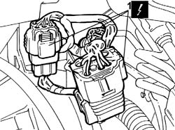
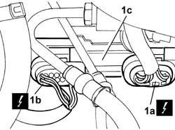

5580A76 Braking system check control unit - R.R.
- Path
- Procedures > 55 ELECTRICAL EQUIPMENT > 5580 SPECIAL ACCESSORIES > 5580A CRUISE CONTROL SYSTEM > 5580A76 Braking system check control unit - R.R.
- Kind
- repair procedure (removal / refitting; the operation number is the code)
- Applies to
- engines: 3.0 V6, 3.2 V6; all production periods
- Interactive page
- https://sloeber94.github.io/elrnDB-lThss/en/#/193016
Applies to: engines: 3.0 V6, 3.2 V6; all production periods
 Removing
Removing
 Refitting
Refitting- Open the boot, remove the cover on the left hand side and disconnect the negative battery lead.
See in Op. 1048A28 vacuum air circuit resonator pipe - r+r
1. Open the retaining band and disconnect the automatic transmission electrical connectors.
 | Description | Connector |
|---|---|---|
1 | Automatic transmission solenoid valves | L050A |
| Description | Connector |
|---|---|---|
1 | Automatic transmission solenoid valves | L050B |
| Description | Connector |
|---|---|---|
1 | Automatic transmission solenoid valves | L050C |

Applies to: engines: 3.0 V6, 3.2 V6; all production periods
1. Disconnect the connectors (1a) and (1b) for the braking system check control unit (1c) and remove the actual control unit.
| Description | Connector |
|---|---|---|
1a | Braking system check control unit (NBA brake assistance) | M052 |
| Description | Connector |
|---|---|---|
1b | Braking system check control unit (NBA brake assistance) | M052 |

Applies to: engines: 3.0 V6, 3.2 V6; all production periods
Refitting
Removing- Position the braking system check control unit and connect the connectors to the actual control unit.
| Description | Connector |
|---|---|---|
. | Braking system check control unit (NBA brake assistance) | M052 |
| Description | Connector |
|---|---|---|
. | Braking system check control unit (NBA brake assistance) | M052 |
- Connect the electrical connectors for the automatic transmission and close the retaining band.
| Description | Connector |
|---|---|---|
. | Automatic transmission solenoid valves | L050A |
| Description | Connector |
|---|---|---|
. | Automatic transmission solenoid valves | L050B |
| Description | Connector |
|---|---|---|
. | Automatic transmission solenoid valves | L050C |
See in Op. 1048A28 vacuum air circuit resonator pipe - r+r
- Connect the negative battery terminal and position the cover on the left hand side of the luggage compartment.